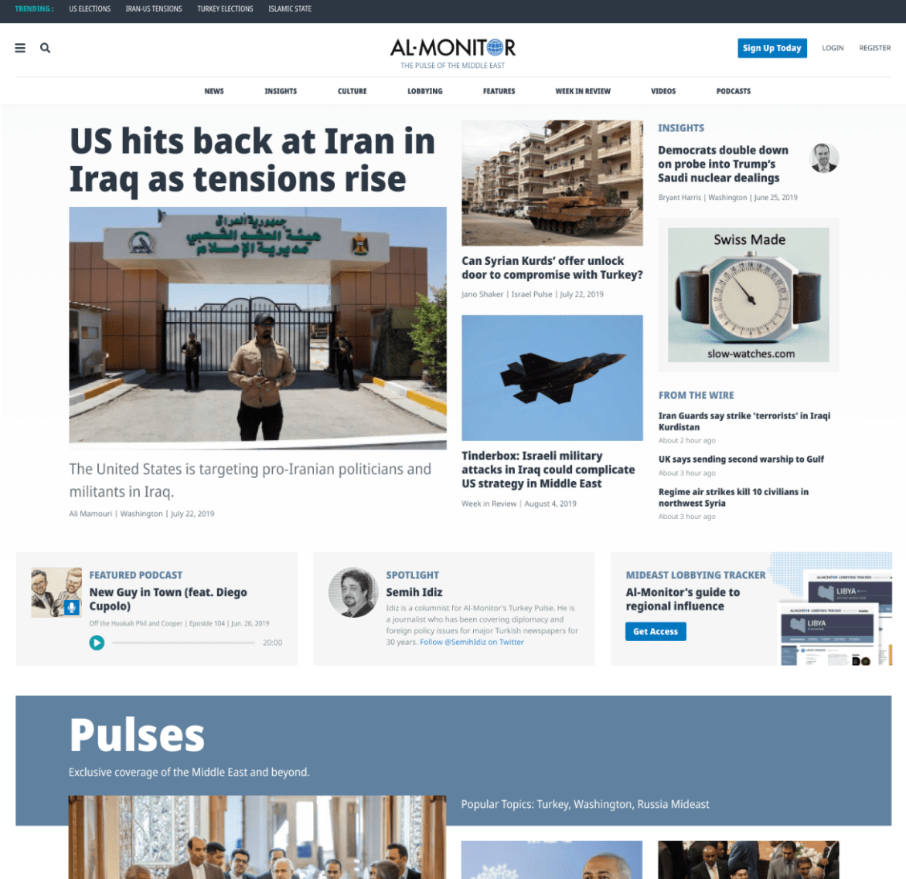

Hello and welcome to my site. I’m Kurt, a motivated and adaptive innovative thinker who enjoys data-driven, digital design and development. I’ve helped dozens of non-for-profits, NGOs, media organizations, startups, and others rethink and reshape their digital experiences.
I'm an Iowa native who has spent most of his career designing and developing for digital and print mediums for various organizations across the world. I focus on making high-quality, content-focused, data-backed, responsive websites for the progressive web.
As a former journalist and infographics designer, I enjoy breaking large problems down into small, bite-sized pieces helping my clients understand their user bases immediate needs while also imagining how they might push the boundaries and be truly innovative.
I pride myself on solutions that are simple to use and elegant to experience. I listen. I reflect, amplify, and enhance the mission of your organization, your audience, and your specific project. To do this successfully, I use an agile approach, and a flexible attitude to maximize satisfaction and input. No problem is too small or too large.
My most recent work includes taking a telehealth consortium from JV to varsity (their words not mine), developing a strategy for and implementing a tool to validate content related to the ongoing COVID-19 health crisis, and helping a Chicago non-profit enhance their digital presence. Have a look at a few case studies below.
The National Consortium of Telehealth Resource Centers (NCTRC) is a collaborative of 12 regional and 2 national resource centers, committed to implementing telehealth programs for rural communities. My company - Made by Munsters - partnered with them in early 2020 to help them rethink, redesign, and redevelop their consortium’s marketing website.
With just a few days before the start of a new semester, a few professors from Northwestern’s Medill School of Journalism asked my team to help them quickly plan and implement a new, online course for their students. The COVID-19 analyzer provides multi-dimensional coverage of the pandemic, shedding light on stories that receive little coverage elsewhere. You can read the full case study on Made by Munsters' website.
Dare2tri’s mission is to positively impact the lives of athletes with physical disabilities and visual impairments by developing their skills in paratriathlon. My team and I partnered with Dare2tri to reimagine its web presence and empower its team to boost donations. You can read the full case study on Made by Munsters' website.
Al-Monitor’s mission is to foster a deeper understanding of the Middle East. The editorial team focuses on analysis that both informs and influences the region. We partnered with ALM to reimagine its digital presence and bolster revenue. My focus: improve performance through reusable components and boost engagement by delivering a more immersive web and mobile experience.

Over the course of my career, I have had the opportunity to shape startups such as ThinkCERCA, TopstepTrader, OrderNova, and Schlep. While also working closely with advocacy and non-profit organizations to build, activate and mobilize their audience bases.
I've worked for and with media-based organizations such as ESPN, Al-Monitor, Red Ventures, and Injustice Watch to develop immersive print and digital storytelling experiences while at the same time, helping large health organizations develop software to assist doctors and researchers eradicate cancer.
It's these experiences that help drive my team at Made by Munsters' strategy and plan of attack for each project we take on. Here are just a few of the many places I have worked over my career.